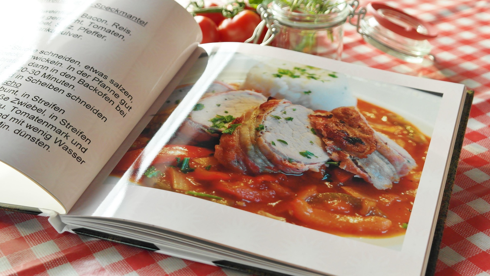

Welcome to Odin Recipes, your place for delicious homemade meals. Explore easy-to-follow recipes for classic dishes that are perfect for family dinners, special occasions, or quick meals. Whether you are craving pasta, pizza, or pancakes, there is something here for everyone.

A rich and cheesy Italian pasta dish layered with meat sauce.
A homemade pizza with melted cheese and your favorite toppings.
Soft and fluffy pancakes that are perfect for breakfast.
Each recipe is written with simple instructions and ingredients, making them perfect for beginners. Whether you want a comforting dinner, a quick snack, or a sweet breakfast, you will find something delicious to make.